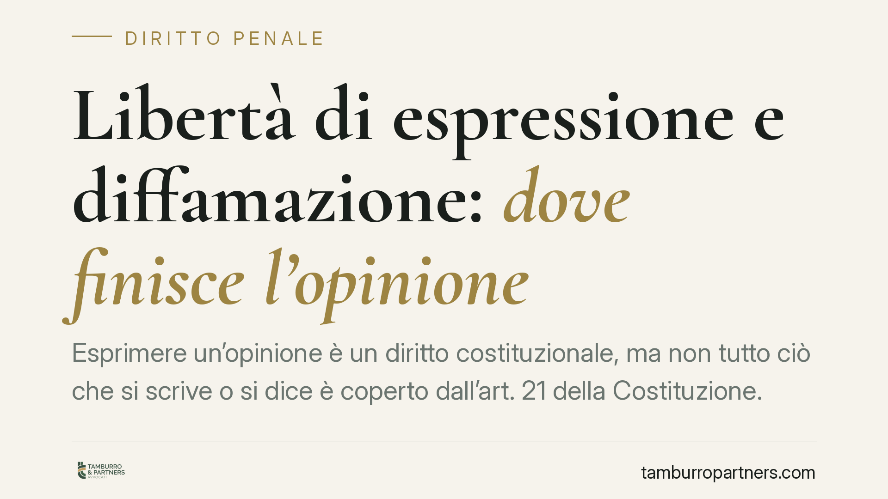

Libertà di espressione e diffamazione: dove finisce l'opinione
Esprimere un'opinione è un diritto costituzionale, ma non tutto ciò che si scrive o si dice è coperto dall'art. 21 della Costituzione. Tra critica lecita e diffamazione corre un confine preciso, fissato da regole giuridiche e da decenni di giurisprudenza. Sapere dove passa questa linea è il primo strumento di tutela, per chi scrive e per chi si sente leso.

Il diritto di manifestare il pensiero e i suoi limiti
L'art. 21 della Costituzione riconosce a chiunque il diritto di manifestare liberamente il proprio pensiero "con la parola, lo scritto e ogni altro mezzo di diffusione". È un pilastro dell'ordinamento democratico, ma non è un diritto assoluto.
Quando l'esercizio di questa libertà lede la reputazione altrui, entra in gioco l'art. 595 del codice penale, che punisce la diffamazione: l'offesa all'altrui reputazione comunicata a più persone in assenza dell'offeso. La legge n. 47 del 1948 (legge sulla stampa) estende poi la responsabilità a più soggetti quando l'offesa avviene attraverso un mezzo giornalistico.
Quando la critica è lecita
La giurisprudenza della Cassazione ha individuato tre condizioni che, se rispettate insieme, escludono la responsabilità penale. Si parla di "esimenti", cioè cause che rendono lecita una condotta altrimenti punibile.
La verità del fatto. Ciò che si racconta deve corrispondere al vero, oppure derivare da un serio controllo delle fonti. Nella critica, il fatto storico su cui si fonda il giudizio deve essere reale.
L'interesse pubblico. La notizia o l'opinione devono riguardare temi di rilievo per la collettività, non curiosità private o attacchi personali fini a se stessi.
La continenza. È il criterio più delicato. Significa misura nell'espressione: si possono esprimere valutazioni anche aspre, ma senza trascendere nell'insulto gratuito o nell'attacco alla persona. La critica colpisce l'operato, non la dignità.
La distinzione chiave è quella tra opinione e insulto. Dire che una decisione è "sbagliata, dannosa e incompetente" è critica. Definire chi l'ha presa con epiteti degradanti è offesa. Il primo caso valuta un fatto; il secondo aggredisce la persona.
Chi risponde della diffamazione a mezzo stampa
Un aspetto spesso trascurato è che, quando la diffamazione avviene tramite una pubblicazione, la responsabilità può estendersi oltre l'autore.
Risponde anzitutto chi ha scritto o pronunciato le parole diffamatorie. Ma la legge sulla stampa coinvolge anche il direttore responsabile, per l'omesso controllo (art. 57 c.p.), e prevede una responsabilità civile solidale in capo all'editore e al proprietario della pubblicazione. In pratica, il danneggiato può chiedere il risarcimento a più soggetti contemporaneamente.
Questo principio vale, con i dovuti adattamenti, anche per i contenuti diffusi online, ambito in cui la giurisprudenza continua a definire i confini della responsabilità di piattaforme e gestori.
Cosa cambia per chi comunica
Chi scrive un articolo, gestisce una pagina social o pubblica un commento pubblico è esposto a un doppio rischio: quello penale (la querela per diffamazione) e quello civile (la richiesta di risarcimento del danno).
Non serve un intento persecutorio: basta che l'affermazione sia oggettivamente offensiva e priva delle esimenti descritte. La convinzione soggettiva di "aver ragione" non è sufficiente a mettere al riparo.
Allo stesso tempo, chi si sente diffamato ha strumenti concreti per reagire, ma deve muoversi entro termini precisi: la querela va presentata entro tre mesi da quando si è avuta conoscenza del fatto.
Cosa fare in concreto
- Verifica i fatti prima di pubblicare. Conserva fonti, documenti e riscontri che attestino la veridicità di ciò che affermi.
- Distingui il fatto dall'opinione. Critica scelte e comportamenti; evita giudizi che colpiscono la persona nella sua dignità.
- Misura il linguaggio. Elimina epiteti, sarcasmo aggressivo e termini degradanti: non aggiungono forza all'argomento, ma aprono la strada alla querela.
- Se ti ritieni diffamato, agisci nei termini. Documenta il contenuto offensivo (screenshot, data, contesto) e valuta la querela entro tre mesi dalla conoscenza del fatto.
- Fatti assistere prima di reagire. Sia per pubblicare in sicurezza sia per tutelarti, una valutazione preventiva riduce i margini di errore.
La libertà di espressione resta ampia e protetta. Conoscere i confini che la separano dalla diffamazione consente di esercitarla pienamente, senza esporsi a conseguenze evitabili.
---
*Contributo informativo a cura di Tamburro & Partners - Avv. Giuseppe Tamburro. Non costituisce parere legale.*
Ogni condominio ha una storia a sé.
Se gestisci un'amministrazione e vuoi un confronto su una specifica questione condominiale, scrivi allo studio. Ti rispondiamo entro un giorno lavorativo.